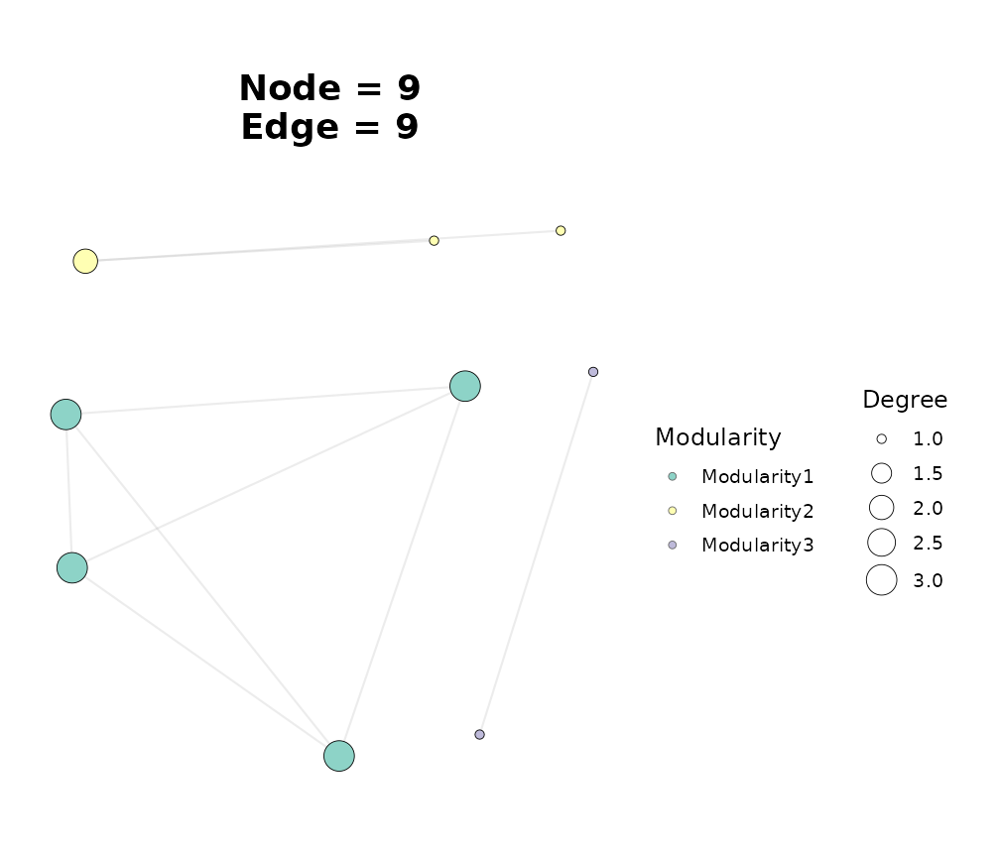
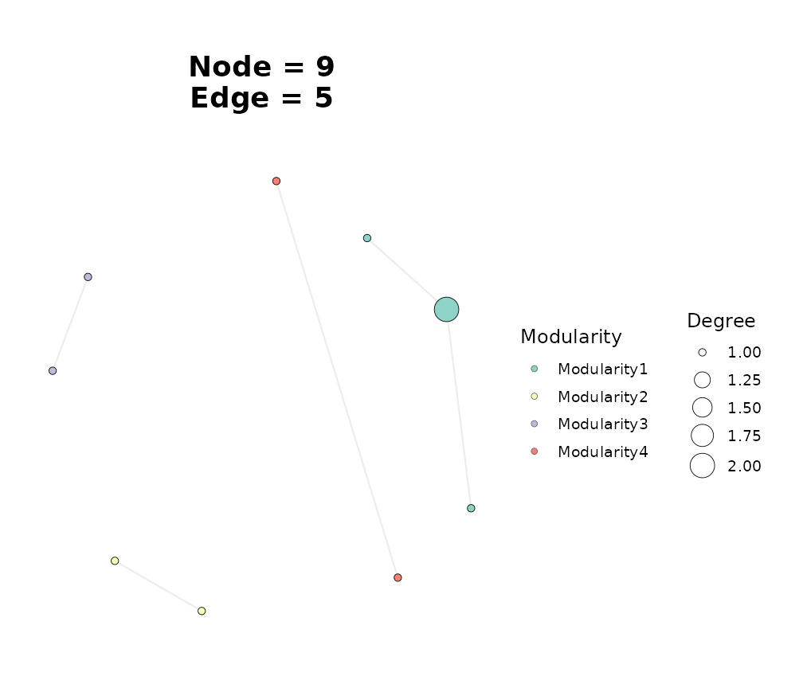

Consensus Networks Across Multiple Inference Methods
Source:vignettes/consensus-network.Rmd
consensus-network.RmdWhy consensus networks?
A single inference method has its own assumptions and biases: correlation ignores compositionality, SparCC was built for compositional microbiome counts, SpiecEasi enforces sparsity through partial correlations, WGCNA optimises for scale-free topology. Different methods consequently disagree on which edges are “real”. A consensus network combines two or more single-method networks into one and keeps the edges that are robustly supported across methods. Recent work in microbiome research – such as CMiNet (Aghayeva et al. 2024) and the hybrid Bayesian / machine learning / network framework of Chowdhury et al. (2024) – has made the case that combining methods materially reduces method-specific bias and sharpens biological interpretation.
ggNetView::build_graph_from_consensus() takes a list of
per-method adjacency matrices and aggregates them via one of four
strategies, with three rank-fusion algorithms available under the
rank-fusion route:
method |
What it does |
|---|---|
intersection |
Keep edges present in every method |
weighted_average |
Linear combination after per-method min-max normalisation |
majority_vote |
Keep edges supported by >= min_methods
|
rank_fusion |
Aggregate per-method ranks via Borda / RRA / RRF |
The output is a tbl_graph with the same schema as every
other build_graph_from_*() constructor, so it plugs
directly into ggNetView().
library(ggNetView)
#>
#> ░██ ░██
#> ░██
#> ░████████ ░████████ ░████████ ░███████ ░████████ ░██ ░██ ░██ ░███████ ░██ ░██ ░██
#> ░██ ░██ ░██ ░██ ░██ ░██ ░██ ░██ ░██ ░██ ░██ ░██░██ ░██ ░██ ░██ ░██
#> ░██ ░██ ░██ ░██ ░██ ░██ ░█████████ ░██ ░██ ░██ ░██░█████████ ░██ ░████ ░██
#> ░██ ░███ ░██ ░███ ░██ ░██ ░██ ░██ ░██░██ ░██░██ ░██░██ ░██░██
#> ░█████░██ ░█████░██ ░██ ░██ ░███████ ░████ ░███ ░██ ░███████ ░███ ░███
#> ░██ ░██
#> ░███████ ░███████
#>
#>
#> ggNetView: Reproducible and Deterministic Network Analysis and Visualization
#> Version: 0.2.1
#>
#> Authors: Yue Liu, Chao Wang
#> Maintainer: Yue Liu <yueliu@iae.ac.cn>
#>
#> Manual: https://jiawang1209.github.io/ggNetView-manual/
#> GitHub: https://github.com/Jiawang1209/ggNetView
#> Bug Reports: https://github.com/Jiawang1209/ggNetView/issues
#>
#> Type citation('ggNetView') for how to cite this package.Step 1: Build per-method networks on the same data
We use the package’s otu_rare_relative example data. To
keep the vignette responsive we restrict to the 40 most abundant
OTUs.
data(otu_rare_relative)
mat <- as.matrix(otu_rare_relative)
mat <- mat[order(rowSums(mat), decreasing = TRUE)[seq_len(40)], ]
dim(mat)
#> [1] 40 18We construct three networks on the same matrix using three different inference methods. The exact downstream pipeline doesn’t matter for the consensus step – we only need an adjacency matrix from each method.
# Method 1: Spearman correlation through psych::corr.test (no
# compositionality assumption, baseline).
g_cor <- build_graph_from_mat(
mat = mat,
method = "cor",
cor.method = "spearman",
proc = "BH",
r.threshold = 0.4,
p.threshold = 0.05,
module.method = "Fast_greedy",
seed = 1
)
#> The max module in network is 4 we use the 4 modules for next analysis
# Method 2: WGCNA-style correlation (uses WGCNA::corAndPvalue + the
# package's standard thresholding). Produces a different sparsity
# pattern than plain correlation in practice.
g_wgcna <- build_graph_from_mat(
mat = mat,
method = "WGCNA",
cor.method = "spearman",
proc = "BH",
r.threshold = 0.4,
p.threshold = 0.05,
module.method = "Fast_greedy",
seed = 1
)
#> The max module in network is 4 we use the 4 modules for next analysis
# Method 3: Hmisc::rcorr -- another correlation engine with slightly
# different missing-value handling and tie behaviour.
g_hmisc <- build_graph_from_mat(
mat = mat,
method = "Hmisc",
cor.method = "spearman",
r.threshold = 0.4,
p.threshold = 0.05,
module.method = "Fast_greedy",
seed = 1
)
#> The max module in network is 4 we use the 4 modules for next analysisNote. In a real microbiome consensus workflow you would reach for SparCC and SpiecEasi to capture compositionality and partial correlation structure (both are available in
ggNetViewviamethod = "SPARCC"andmethod = "SpiecEasi"). We use lighter correlation-family methods here so the vignette builds quickly underR CMD check. The consensus API is method-agnostic – the only requirement is that each method produces a square adjacency matrix with row/column names matching across methods.
Convert each tbl_graph back to an adjacency matrix using
get_graph_adjacency():
adj_cor <- get_graph_adjacency(g_cor)
adj_wgcna <- get_graph_adjacency(g_wgcna)
adj_hmisc <- get_graph_adjacency(g_hmisc)
dim(adj_cor); dim(adj_wgcna); dim(adj_hmisc)
#> [1] 17 17
#> [1] 17 17
#> [1] 9 9build_graph_from_consensus() aligns these matrices on a
common feature set automatically – see node_handling – so
the three matrices need not have identical row/column orders.
Step 2: Try every consensus strategy
adj_list <- list(cor = adj_cor, wgcna = adj_wgcna, hmisc = adj_hmisc)
# Top-level strategies
g_intersect <- build_graph_from_consensus(
adj_list = adj_list,
method = "intersection",
top_modules = 5,
seed = 1
)
#> The max module in network is 4 we use the 4 modules for next analysis
g_wavg <- build_graph_from_consensus(
adj_list = adj_list,
method = "weighted_average",
threshold = 0.3,
top_modules = 5,
seed = 1
)
#> The max module in network is 3 we use the 3 modules for next analysis
g_majority <- build_graph_from_consensus(
adj_list = adj_list,
method = "majority_vote",
binarize = "threshold",
binarize_threshold = 0.4,
min_methods = 2,
top_modules = 5,
seed = 1
)
#> The max module in network is 3 we use the 3 modules for next analysis
# Rank-fusion route, 3 algorithms
g_borda <- build_graph_from_consensus(
adj_list = adj_list,
method = "rank_fusion",
rank_fusion_algorithm = "borda",
threshold = 0.5,
top_modules = 5,
seed = 1
)
#> The max module in network is 3 we use the 3 modules for next analysis
g_rrf <- build_graph_from_consensus(
adj_list = adj_list,
method = "rank_fusion",
rank_fusion_algorithm = "rrf",
threshold = 0.5,
top_modules = 5,
seed = 1
)
#> The max module in network is 3 we use the 3 modules for next analysis
g_rra <- build_graph_from_consensus(
adj_list = adj_list,
method = "rank_fusion",
rank_fusion_algorithm = "rra",
threshold = 0.5,
top_modules = 5,
seed = 1
)
#> The max module in network is 4 we use the 4 modules for next analysisStep 3: Compare consensus outputs
A quick sanity check: how many nodes and edges does each strategy keep?
summarise <- function(g, label) {
data.frame(
method = label,
n_nodes = igraph::gorder(g),
n_edges = igraph::gsize(g)
)
}
do.call(rbind, list(
summarise(g_intersect, "intersection"),
summarise(g_wavg, "weighted_average"),
summarise(g_majority, "majority_vote"),
summarise(g_borda, "rank_fusion / borda"),
summarise(g_rrf, "rank_fusion / rrf"),
summarise(g_rra, "rank_fusion / rra")
))
#> method n_nodes n_edges
#> 1 intersection 9 5
#> 2 weighted_average 9 9
#> 3 majority_vote 9 9
#> 4 rank_fusion / borda 9 9
#> 5 rank_fusion / rrf 9 9
#> 6 rank_fusion / rra 9 5The strict strategies (intersection,
majority_vote) tend to produce sparser, more conservative
networks – only edges that are robustly supported across methods
survive. The rank-fusion family typically yields denser networks because
it ranks every pair and lets the user pick a final cutoff via
threshold.
Step 4: Visualise the consensus network
Any consensus result can be passed to ggNetView()
exactly like any other build_graph_from_*() output. Below
we show the Borda-fused network with module colouring:
ggNetView(
g_borda,
layout = "fr",
seed = 1,
node_size_range = c(2, 7),
node_fill = "Modularity",
module_label = FALSE
)
Consensus network from rank-fusion / Borda.
ggNetView(
g_intersect,
layout = "fr",
seed = 1,
node_size_range = c(2, 7),
node_fill = "Modularity",
module_label = FALSE
)
Strict-intersection consensus: only edges shared across all three methods.
Step 5: Choosing a strategy
As a starting point:
-
Reach for
rank_fusion / rrawhen you want a statistically justified consensus score with a notion of “significantly more supported than uniform random ranking”. This is the closest analogue to what CMiNet does for microbiome networks. Falls back to a Beta-order-statistic implementation when the optionalRobustRankAggregpackage is not installed. -
Reach for
rank_fusion / rrfwhen robustness to outlier ranks matters more than statistical interpretability. RRF is parameter-free in practice (thek = 60default is the information-retrieval convention). -
Reach for
rank_fusion / bordaas a baseline – it has no hyperparameters and is the easiest to explain. -
Reach for
intersectionwhen you specifically want the smallest, most defensible set of edges. -
Reach for
weighted_averagewhen one of your methods is known to be more reliable on this data and you want to bias the consensus toward it (set its weight higher inweights).
The result of any strategy is a standard tbl_graph, so
every downstream analysis in the package – topological summaries
(get_network_topology()), zi-pi role classification
(ggnetview_zipi()), per-module subgraphs
(get_subgraph()), and the full layout gallery – works
without modification.
Importing networks built by external tools
build_graph_from_consensus() does not assume the input
matrices were built by ggNetView. Networks produced by
external R packages or standalone tools (NetCoMi, CoNet, FlashWeave,
CMiNet, …) can be combined too – as long as you can express each as a
square numeric adjacency matrix with row and column names.
Concretely:
adj_list <- list(
netcomi = as.matrix(netcomi_assoc_mat),
flashweave = as.matrix(flashweave_adj),
cminet = as.matrix(cminet_consensus_mat)
)
obj <- build_graph_from_consensus(
adj_list = adj_list,
method = "rank_fusion",
rank_fusion_algorithm = "rra",
threshold = 0.4
)This is the same method-agnostic interface that
build_graph_from_adj_mat(),
build_graph_from_df(),
build_graph_from_node_edge(),
build_graph_from_igraph(),
build_graph_from_wgcna(), and
build_graph_from_stringdb() provide – extended to accept
multiple inputs at once.
References
- Kolde, R., Laur, S., Adler, P., & Vilo, J. (2012). Robust rank aggregation for gene list integration and meta-analysis. Bioinformatics, 28(4), 573-580.
- Cormack, G. V., Clarke, C. L. A., & Buettcher, S. (2009). Reciprocal rank fusion outperforms Condorcet and individual rank learning methods. Proceedings of the 32nd International ACM SIGIR Conference, 758-759.
- Aghayeva, R., et al. (2024). CMiNet: An R package and user-friendly Shiny App for constructing consensus microbiome networks.
- Chowdhury, S., et al. (2024). A hybrid framework for disease biomarker discovery in microbiome research combining Bayesian networks, machine learning, and network-based methods.